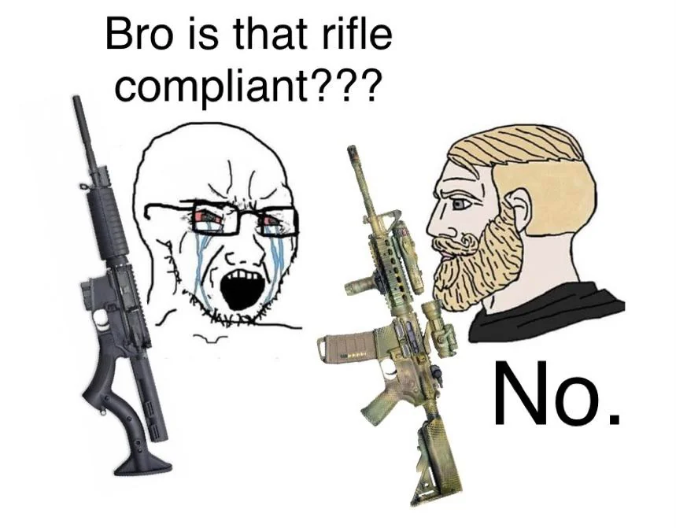

Wow this one's a bit on the nose. It's something that I've been thinking about for a while now, and I just wanted to share my opinions on the matter. Obviously its just some opinions, so you don't have to like them.
Defining the legality of guns has been a touchy subject in recent American politics. The general concensus is that guns should be legal, however many disagree on what guns make the cut.
The American Bureau of Alcohol, Tobaco, Firearms, and Explosives generally has the final say on the matter (at least here in the States). However, many people have started to point out that the ATF has been acting as an extra-judicial organization, and has overstayed its welcome.
That's why I decided to take matter into my own hands, and give the objective truth on the matter (/j). Guns should be legal.
Among the many poor decisions of the ATF, comes the classification of fire arms. Many in the gun community have been outraged by their recent classification of pistols (See 18 U.S.C., § 921(A)(29) and 27 CFR § 478.11).
According to the ATF, anything with a stock is a rifle. This means that you can put a stock on your Glock 17, and need a tax stamp.
There is no need to explain why this is so idiotic, but it gets worse. Short barell rifles, or SBRs, are defined as a rifle with a barel length less than 16 inches. But if you remove its stock, it becomes an "AR Pistol." Not having the correct tax stamps for these will send you straight to jail.

Due to extremely tragic events and horrific mass shootings, the AR-15 style of rifles has been in the public's eye for a while now. Politicans win brownie points for Sh*tting on them, and the ATF can't stop regulating them.
The truth is, and this might be hard to hear for some people, but AR-15's are not more deadly than most other fire arms.